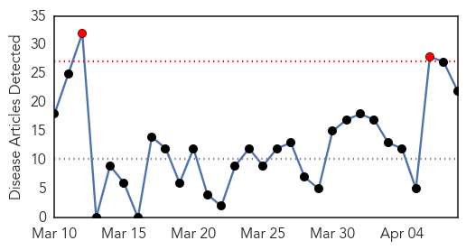
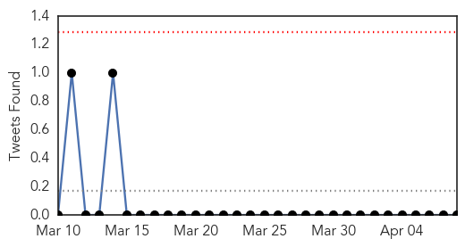
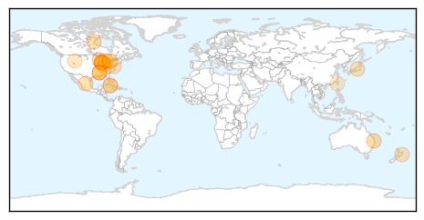
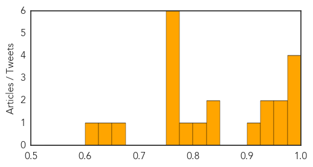
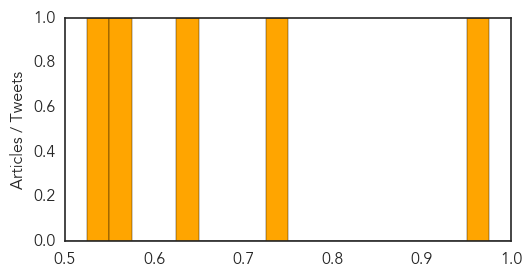

Influenza
30-Day Web Trend
2 alerts, 0 warnings

30-Day Twitter Trend
0 alerts, 0 warnings

Article Locations
Article Confidences
Top Articles:
- 0.994
- Ont. bird flu outbreak caused by H5N2, same virus that hit B.C. in December
- 0.993
- Ont. bird flu outbreak caused by H5N2 virus
- 0.983
- Delay in flu vaccine sees spike in number of victims in Queensland
- 0.977
- No canine influenza cases confirmed in Lafayette
- 0.957
- What veterinarians say you need to know about the dog flu
- 0.956
- Canine Infectious Respiratory Disease #CIRD strikes #Chicago Metro area
- 0.931
- Avian flu continues to spread through Minnesota
- 0.927
- Circulation of highly pathogenic avian flu in North American birds
- 0.921
- Warning for pet owners about deadly "dog flu" - Cleveland 19 News
- 0.839
- Early recognition vital in combating new diseases, says expert
- 0.834
- dog flu puts owners on alert on the north shore
- 0.813
- More Oxford County Poultry Farms Under Bird Flu Quarantine
- 0.798
- Napier woman Karen Cherrie nearly killed by flu
- 0.768
- Vet: Phones ringing non-stop over canine influenza
- 0.759
- Canine Flu Vaccine Side Effects
- 0.751
- April 8, 2015 Archives
- 0.751
- April 8, 2015 Archives
- 0.751
- April 7, 2015 Archives
- 0.751
- April 7, 2015 Archives
- 0.660
- Bird flu war intensifies
- 0.643
- Avian flu confirmed in Canada
- 0.618
- Avian Flu Quarantine Expands in Oxford County
Top Tweets:
-
No tweets found for Apr 08, 2015
Hepatitis
30-Day Web Trend
30-Day Twitter Trend
Article Locations


Article Confidences
Top Articles:
Top Tweets:
-
No tweets found for Apr 08, 2015